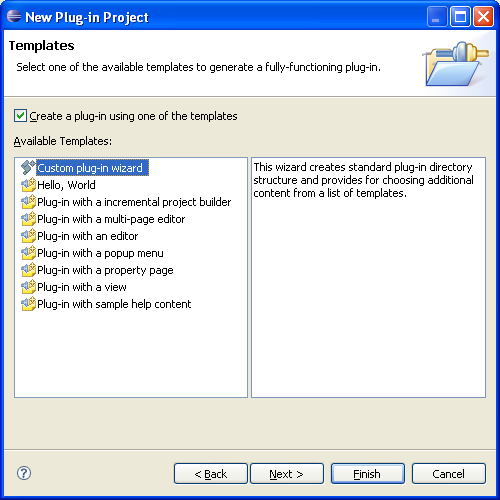
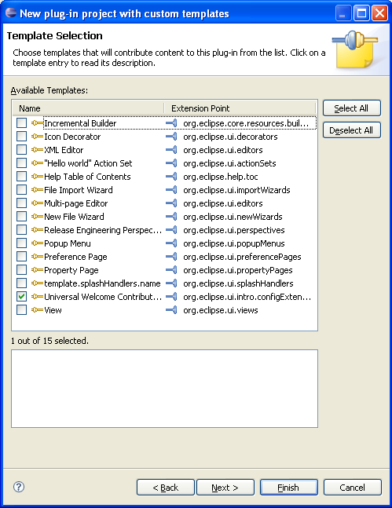
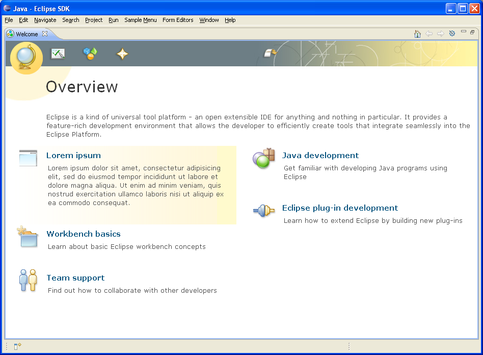
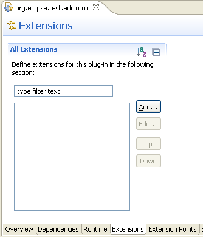
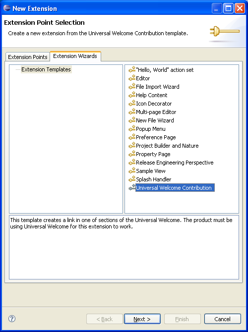

Chris Goldthorpe April 30, 2007
In the past users who install new features from an update site have a hard time determining what exactly has changed on their system. There may be new toolbar icons and menu items but it is hard to determine exactly what has changed. A new feature in Eclipse 3.3 provides a means for developers to draw attention to their plugins and features when they are newly installed. If a plugin has universal intro content then the first time Eclipse is restarted after installing that plugin the Universal Intro page will be displayed with the new feature shown at the top and with a yellow background to add prominence.
When Eclipse with Universal Intro enabled is started it counts the number of plugins contributing Intro content (Universal Intro is enabled by default for the Eclipse SDK, Platform and most other Eclipse downloads) . If the number of plugins has increased it will cause Welcome to be displayed, regardless of whether it was open before, and open to a page containing new content. If more than one page contains new content it will break the tie using the same order as the order of the links at the top of each page, for the Eclipse SDK this is overview, tutorials, samples, whatsnew.
In subsequent launches of Eclipse the new content will move to its natural position based on the theme and will no longer have a yellow background.
A PDE template allows for the creation of a new plugin with intro content or the addition of universal intro content to an existing plugin. Both are described below.
Step 1. Start the PDE wizard by selecting File->New->Project->Plug-in project.
Step 2. On the first page of the wizard give the project a name and accept defaults for all other fields, hit "Next".
Step 3. On the next page select "Custom plug-in wizard"

Step 4. Check the template "Universal Welcome Contribution". Leave all other extensions unchecked. Hit Finish.

Step 5. Launch Eclipse. Notice how the Welcome opens to a page which prominently displays the new contribution.

Step 1. Open the plugin mainfest file META-INF/MANIFEST.MF for the plugin project
Step 2. Select the extensions tab in the PDE editor
Step 3. Click the "Add..." button

Step 4. Select the extension wizards tab in the Extension Point Selection dialog, select "Universal Welcome Contribution:" hit "Next".

Step 5. On the next screen hit Finish and save the editor contents.
Step 6. Launch Eclipse. Notice how the Welcome opens to a page which prominently displays the new contribution.